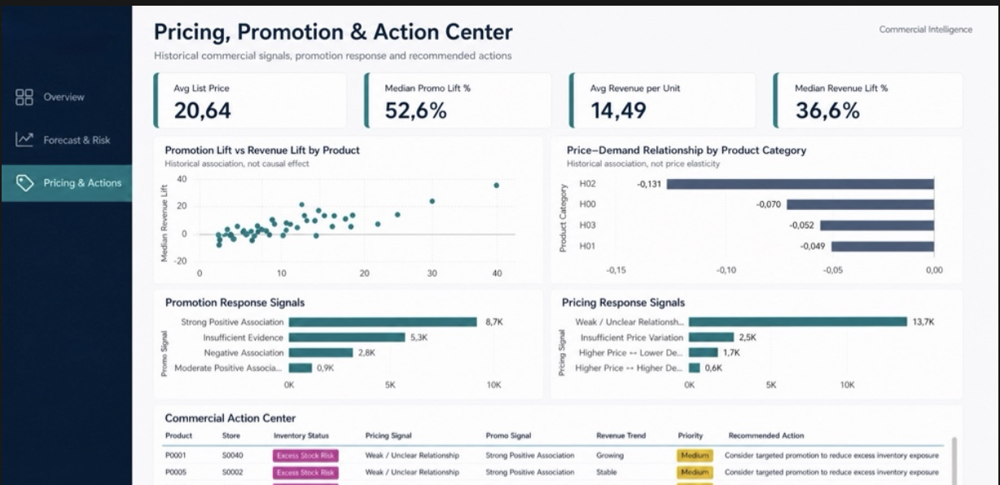

I help e-commerce and retail businesses forecast demand, catch inventory risk before it costs money, and see performance clearly. It's built on 7 years of hands-on e-commerce operations.

I'm a Data Analyst with over seven years of experience in e-commerce. Most of it hands-on: running the sales tracking, inventory monitoring and reporting for a family e-commerce business, before moving into data analytics full-time.
That background changes how I work. I don't build a forecasting model to show off the model; I start from the business problem, whether that's a stockout, a slow mover or a reporting gap, and use Python, SQL, machine learning and BI tools to get to a decision someone can actually act on.
Time-series forecasting, safety stock, reorder points and replenishment planning, built to flag risk before it becomes a stockout or dead stock.
Interactive Tableau and Power BI dashboards that turn sales, product and store performance data into something a team actually checks.
Cleaning, validation, exploratory analysis and SQL-based reporting: the unglamorous work that makes everything after it trustworthy.
Full write-ups, methodology and results for every project are linked in the Portfolio section at the bottom of this page.
End-to-end machine learning project for retail demand forecasting, inventory risk analysis and replenishment optimization. It compares baseline, XGBoost and deep learning approaches to find the most reliable forecast.
Analytics system evaluating e-commerce operations and performance drivers across 180,519 retail records and 65,752 unique orders, built into a business-decision layer rather than a static report.
Business performance analysis on the Olist e-commerce dataset, covering sales, customers, products and operational KPIs, from raw SQL to a Tableau dashboard.
Interactive dashboard for pricing, sales-channel and inventory strategy, built to surface trends and performance drivers a trading team can act on weekly.
I don't build models simply to produce technical outputs. I build them to support a decision.
Review the available data, the business context and what decision the analysis actually needs to support.
Clean and validate the data, then identify the performance drivers that actually explain what's happening.
Turn the analysis into a forecast, dashboard or recommendation someone can act on, not just a technical output.
Tell me what decision you're trying to make, and I'll tell you the most effective way to get there.